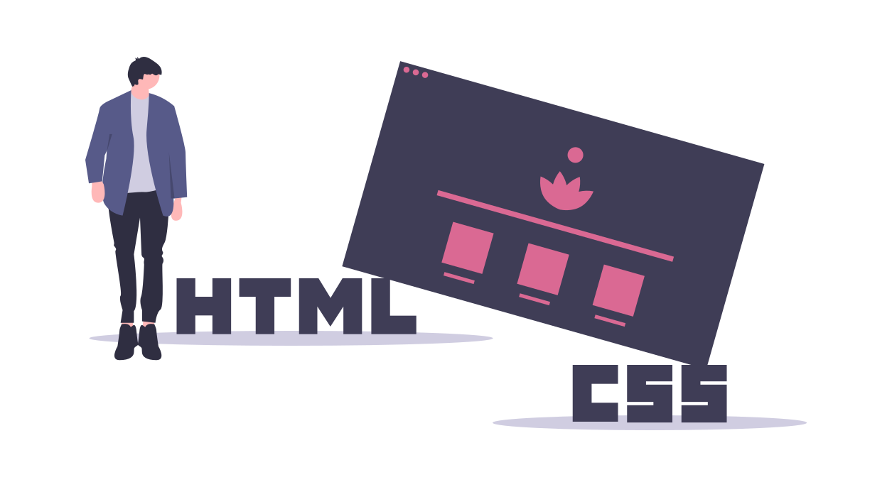

Hyperblog
Blog de cabecera para programadores cool y geniales
Hyperblog
Blog de cabecera para programadores cool y geniales
Este es el título atractivo e interesante del post
Y este es el parrafo de inicio donde vamos a explicar las cosas increibles que se pueden hacer con ramas
Los blogs son la mejor forma de compartir información y tus ideas. Mucho mas que ir a conferencias o salir en Youtube. Excepto si eres un rockstar. Pero estadísticamente no lo eres.... por ahora.

Practica con pullrequest
Aqui esta mi firma : Mariiacch